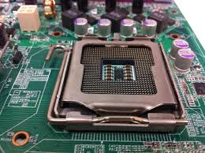
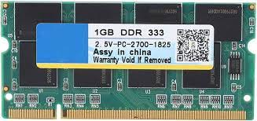
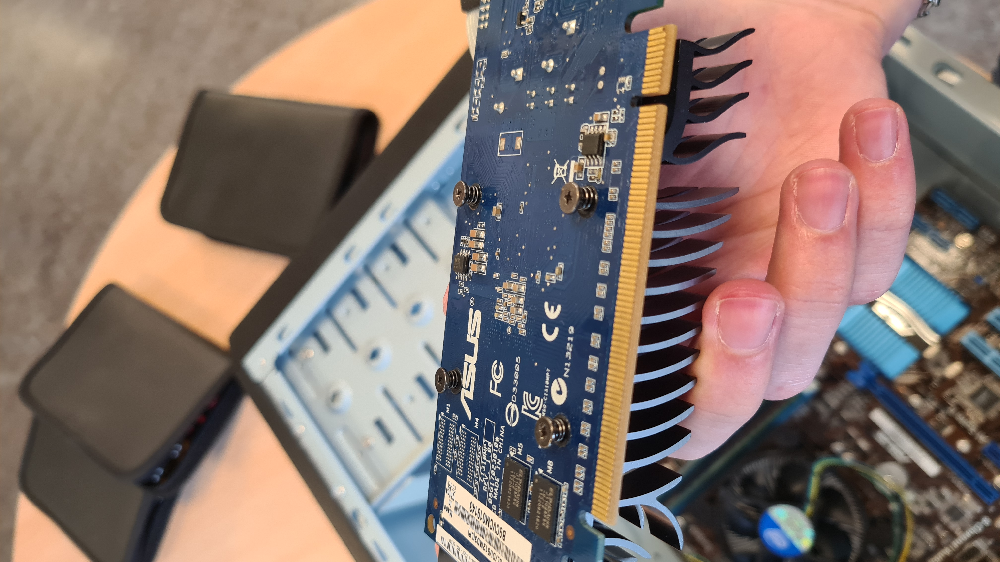
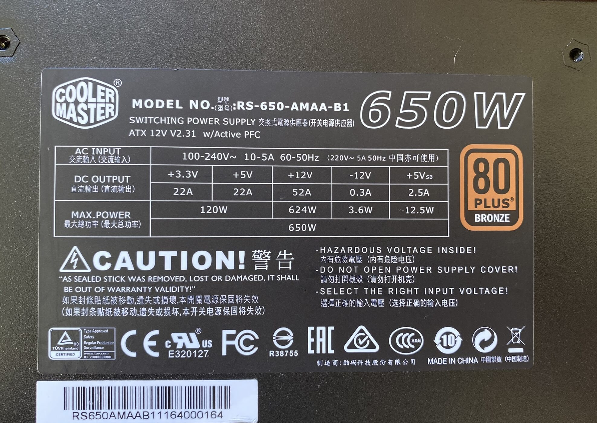

Kompatibla Datordelar
Att bygga en dator kräver noggrann planering för att säkerställa att alla komponenter fungerar tillsammans. Här är några viktiga steg och tips för att kontrollera att dina datordelar är kompatibla.
Kontrollera CPU och moderkort
Det första steget är att se till att din CPU och ditt moderkort är kompatibla. Moderkort har specifika socket-typer som passar olika CPU-modeller.
- Identifiera CPU-socket: Kontrollera vilken typ av socket din CPU använder (t.ex. Intel LGA1200, AMD AM4) och säkerställ att moderkortet har samma socket. 
Kontrollera RAM-kompatibilitet
Nästa steg är att säkerställa att ditt RAM-minne är kompatibelt med moderkortet. Här är några saker att tänka på:
- RAM-typ: Kontrollera vilken typ av RAM-moduler (DDR4, DDR5) som moderkortet stöder.
- Maximal RAM-kapacitet: Se till att moderkortet kan hantera den totala mängden RAM du vill installera.
- RAM-hastighet: Kontrollera moderkortets specifikationer för att se vilka RAM-hastigheter som stöds. 
Kontrollera grafikkortskompatibilitet
Grafikkortet måste vara kompatibelt med moderkortet och datorlådan:
- PCIe-socket: Se till att moderkortet har en PCIe x16-slot för att stödja ditt grafikkort.
- Plats i datorlådan: Kontrollera att grafikkortet fysiskt får plats i datorlådan. 
Kontrollera strömförsörjningen (PSU)
Strömförsörjningen måste kunna hantera strömbehovet för alla komponenter:
- Effekt: Beräkna den totala strömförbrukningen för dina komponenter och välj en PSU som kan leverera tillräckligt med effekt.
- Kontakter: Se till att PSU:n har tillräckligt med strömkontakter för alla komponenter, särskilt för CPU och grafikkort. 
Kontrollera lagringskompatibilitet
Se till att dina lagringsenheter är kompatibla med moderkortet:
- SATA-portar: Kontrollera att moderkortet har tillräckligt med SATA-portar för dina hårddiskar och SSD:er.
- M.2-slots: Om du använder M.2 SSD:er, se till att moderkortet har rätt antal M.2-slots med stöd för dina enheter.

Verktyg och resurser
För att underlätta kompatibilitetskontrollen kan du använda olika onlineverktyg och resurser:
- PC Part Picker: En webbplats där du kan bygga din dator virtuellt och kontrollera kompatibiliteten mellan olika komponenter.
- Moderkortstillverkarens webbplats: Här hittar du kompatibilitetslistor och rekommendationer för olika komponenter.
- Forum och recensioner: Andra användares erfarenheter kan ge värdefull information om kompatibilitet och prestanda.